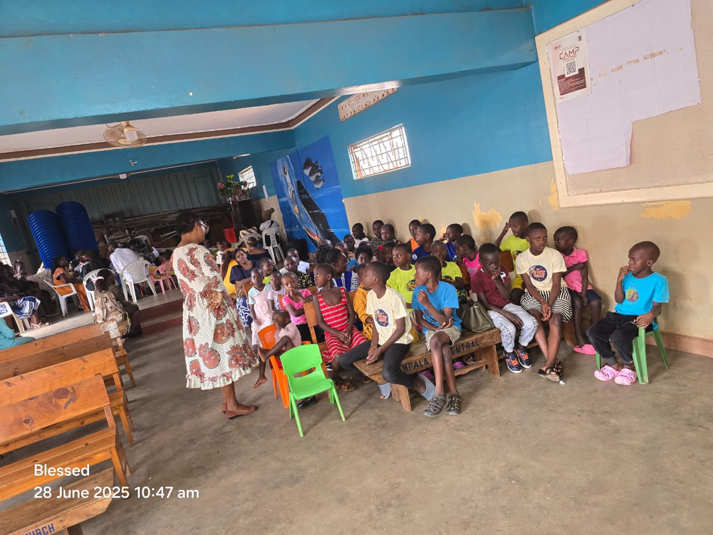
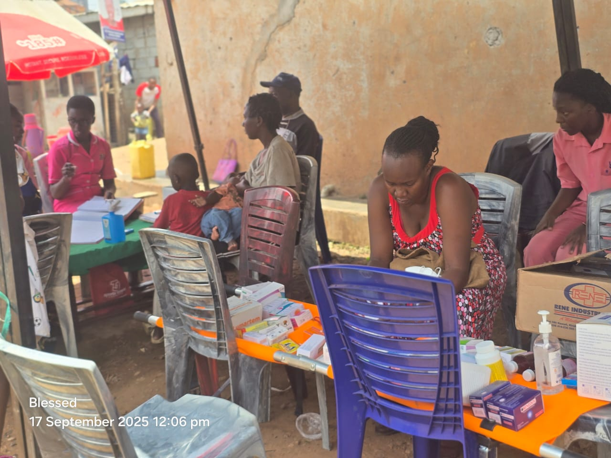

Hot meals each Sabbath.
Right after divine service, we always have to provide food to the children. For most, this is the only proper meal of the week, so we don't take the task lightly.
Support mealsAmong many others, these are some of our programmes we run from the Kampala Central Seventh-day Adventist Church compound on Gadaffi Road, on the edge of the Makerere–Kivulu slum.

Right after divine service, we always have to provide food to the children. For most, this is the only proper meal of the week, so we don't take the task lightly.
Support meals
At the start of each term, we sit with families and work out what's actually missing — fees, exercise books, pens, a uniform that fits. We pay schools directly where we can, and run a small homework club in the church hall on weekday afternoons.
Sponsor a child
Every Sabbath morning, the children's chapel at Kampala Central SDA fills up with kids from Kivulu. Songs, Bible stories, and small-group time with our volunteer teachers — some of them students from Makerere University. School-holiday camps (VBS - Vacation Bible School) run during the longer breaks.
Volunteer
A few times a year, nurses and doctors from the church's health team set up tents on the church grounds. Free check-ups, malaria treatment, basic medicines, and maternal and child health screening — for families who would otherwise never see a clinic.
Fund a camp
The mothers in our circle gather every few months to learn something useful — making reusable sanitary pads, basic tailoring, simple food businesses. There's also time for parenting conversations and tea, and a small care package of household supplies to take home.
Support a mother